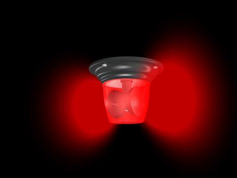

2023-at írtunk, amikor egy programozási projekt keretein belül 3 jövőbeli magyar géniusz (Nevük: Ármin, Dóra, Tamás) létrehozta az univerzum legjobb játékát, ami minden képzeletet felülmúlt.
A játék, ami megváltoztatja mindenki életét:
 Vigyázat veszély!
Csak kipróbálod és nem tudod abbahagyni.
A versenyszellem, ami beszippant, hogy ki a jobb ebben a játékban, tönkretesz minden barátságot.
A játék, amiről generációk fognak beszélni.
Ez maga A JÁTÉK
Bemutatjuk programozási karrierünk gyöngyszemét: PING-et. (100% magyar termék) Készült: a legtitkosabb programozási bázison, amire csak úgy hivatkozunk, hogy JEDLIK (Cím: Győr, Szent István út 7, 9021)
A játék fejlesztése egy igazi kaland volt. Március 20.-án a
[Csapat_név.txt] megalakult. Egy eldugott informatikai teremben egy Hétfői
napon kb. az 5. órában megindultak a tervezési munkák. Akkor találta ki a
három mester programozó a magyar játékpiac meghatározó ötletét.
A PING™ a Pong nevezetű videojáték reinkarnációja egy pár új funkcióval.
Erről bővebben lejjebb olvashatsz.
A játék 6 gépen készült: 3 a JEDLIK bázison, 3 pedig a programozók
rejtekhelyein. Hetente dolgoztak rajta hárman. Mindenféle internetes
oldalról szedtek segítséget, valamint egymást is segítették. A csapat szép összhangba került, és szépen dolgoztak rajta Április 17.-éig, és aznap elérte az igazi formáját a játék. És büszkék is voltak rá.
A Ping egy kétdimenziós sportjáték, amely asztali teniszt szimulál. A játékos az egyik lapátot irányítja, függőlegesen mozgatva a képernyő bal vagy jobb oldalán. Versenyezhetnek egy másik játékossal, aki egy második lapátot irányít az ellenfél oldalán. A játékosok a lapátok segítségével oda-vissza ütnek egy labdát. A cél az, hogy minden játékos tizenegy pontot érjen el az ellenfél előtt; pontokat kapunk, ha az egyik nem adja vissza a labdát a másiknak.
Top vélemények:
hi
hi